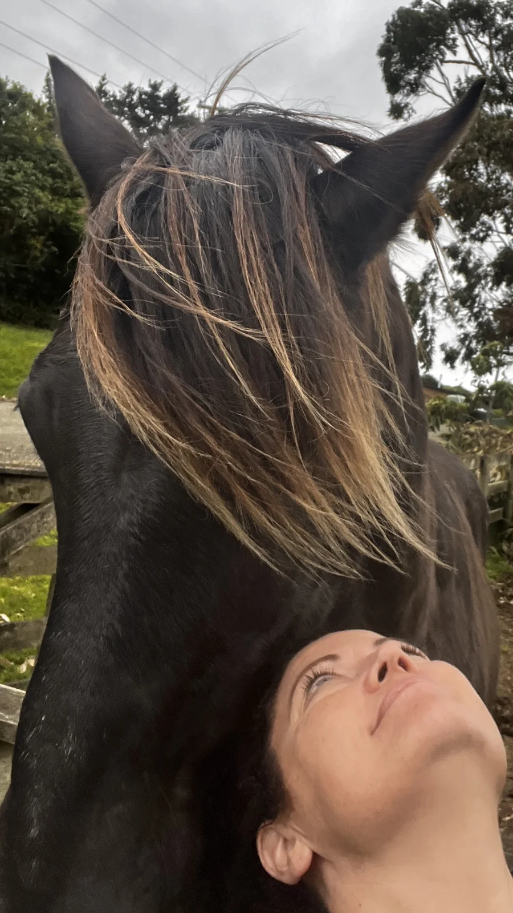

ILYCIA LAVERTY

A Living Studio
A Living Studio is a place where ideas are allowed to evolve. My work moves between architecture, interiors, art and objects, but each begins in the same way,with curiosity, observation and a deep respect for place.
Rather than separating disciplines, I see them as different expressions of the same practice. A sketch may become a building. An artwork may reveal an architectural idea. A material discovered on one project may quietly influence another years later.
This Studio is a record of that ongoing process.